# Used On Multiple Steps
import pandas as pd
from IPython.display import display
import matplotlib.pyplot as plt
import seaborn as sns
import numpy as np
# Step 1. Data Getter
from spotipy import Spotify
from spotipy.oauth2 import SpotifyOAuth
from spotipy import SpotifyException
# Step 3. EDA
from datetime import datetime
from sklearn.preprocessing import minmax_scale
from tabulate import tabulate
# Step 4: ML
from tkinter import simpledialog
from sklearn.model_selection import train_test_split
from sklearn.preprocessing import StandardScaler
from sklearn.neighbors import KNeighborsClassifier
from sklearn.ensemble import RandomForestClassifier
from sklearn.linear_model import LogisticRegression
from sklearn.neural_network import MLPClassifier
from sklearn.metrics import (
classification_report,
confusion_matrix,
balanced_accuracy_score
)
# Extras (Hide Warnings)
import warnings #used to hide some warnings for cleaner code output.
from statsmodels.tools.sm_exceptions import ConvergenceWarning as statsCW
from sklearn.exceptions import ConvergenceWarning as sklearnCW
warnings.filterwarnings("ignore", category=statsCW)
warnings.filterwarnings("ignore", category=sklearnCW)Spotify Analysis of Kendrick Lamar’s Songs
Introduction/Abstract
Credits: Rommel Artola & Spotify for providing the API services to extract data! (Thank you Spotify!)
This is a project carried out to show an example of what an entire machine learning project can look from raw start to a finished product and interpretations. Just as one would do in the real world, a considerable amount of code/time is spent on extracting/cleaning/and doing exploratory data analysis (EDA) on the cleaned dataset. At the end, there are several machine learning models that were used to compare the predictability of them, including random forest, multilayer perceptron (MLP) and K-Nearest Neighbors, for example.
This project in particular uses the API from Spotify that allows pulling several data points from songs. In particular, we look at all of Kendrick Lamar’s albums, songs, and a respectable width of audio features like energy, loudmess, speachiness, etc… Additionally, though Spotify provies a ranking of the songs, this ranking has a decay-factor that is affected by time. We try to reverse-engineer this to de-weight the incredible recent popularity of songs like “Not Like Us”.
For our modeling, we ended up manually classifying the datapoints as whether the song was a VERY STRONG favorite, or not so much. There are extremely limitations with this approach, particulary when the dataset ends up not being particularly large.
In the end, the KNN was found to be the best. However, our classification made it so it was not easily-seperable, or not very easily able to generalize, our data. This means there are likely more/different features that could better separate the datasets, like a text-analysis of the lyrics. Though this was not analyzed here.
Important Note: Yes, Kendrick was playing on loop while coding this entire project
O O// \O/ \\O \O/
/|\ | | | |
/ \ / \ / \ / \ / \
#TheyNotLikeUs Disclaimer:
According to Section IV.2.a.i of Spotify’s Policy Restrictions, machine learning models cannot be built using this data. However, this seems to be for the use in specifics to commercial-type products or that is somehow connected with revenue. This project is simply a hobbyist project and is in no way at all, now or in the future, affiliated with any brand, commercial usage, or anything more than an analytical project that may also be used as a way to teach about Python and data science to early-career data scientists.
Importing Libraries (all)
Extracting Raw Data From Spotify API
# Read in credentials (on .gitignore)
CLIENT_ID = open('client_id.txt').readline()
CLIENT_SECRET = open('client_secret.txt').readline()
REDIRECT_URI = 'https://sites.google.com/view/rommelartola/home/' # My Portfolio site.
sp_oauth = SpotifyOAuth(client_id=CLIENT_ID, client_secret=CLIENT_SECRET, redirect_uri=REDIRECT_URI)
access_token = sp_oauth.get_cached_token()
sp = Spotify(auth_manager=sp_oauth)
# Below try block will cycle through all of Kendrick's songs and append the
# listed values to a dictionary, which will later be convereted to a pandas dataframe
## Another way of doing the same thing could've been a while loop with a += 50 at the
## end of each step. For diagnostics purposes, I prefer try-except blocks many times more.
try:
data_dict = {}
for offset_num in range(0, 10_000+50, 50):
for i in sp.search(q='artist:Kendrick Lamar', type='track', limit=50, offset=offset_num)['tracks']['items']:#.keys()
data_dict.setdefault('ALBUM_ID', []).append(i['album']['id'])
data_dict.setdefault('ALBUM_NAME', []).append(i['album']['name'])
data_dict.setdefault('ALBUM_RELEASE_DATE', []).append(i['album']['release_date'])
data_dict.setdefault('ALBUM_RELEASE_DATE_PRECISION', []).append(i['album']['release_date_precision'])
data_dict.setdefault('TRACK_ID', []).append(i['id'])
data_dict.setdefault('TRACK_NAME', []).append(i['name'])
data_dict.setdefault('EXPLICIT_TRACK', []).append(i['explicit'])
data_dict.setdefault('TRACK_POPULARITY', []).append(i['popularity'])
data_dict.setdefault('TRACK_TYPE', []).append(i['type'])
data_dict.setdefault('TRACK_DURATION_MS', []).append(i['duration_ms'])
# Begin Specific Audio Features Per Song ID
audio_feat_dict = sp.audio_features(i['id'])[0]
data_dict.setdefault('TRACK_DANCEABILITY', []).append(audio_feat_dict['danceability'])
data_dict.setdefault('TRACK_ENERGY', []).append(audio_feat_dict['energy'])
data_dict.setdefault('TRACK_KEY', []).append(audio_feat_dict['key'])
data_dict.setdefault('TRACK_LOUDNESS', []).append(audio_feat_dict['loudness'])
data_dict.setdefault('TRACK_MODE', []).append(audio_feat_dict['mode'])
data_dict.setdefault('TRACK_SPEACHINESS', []).append(audio_feat_dict['speechiness'])
data_dict.setdefault('TRACK_ACOUSTICNESS', []).append(audio_feat_dict['acousticness'])
data_dict.setdefault('TRACK_INSTRUMENTALNESS', []).append(audio_feat_dict['instrumentalness'])
data_dict.setdefault('TRACK_LIVENESS', []).append(audio_feat_dict['liveness'])
data_dict.setdefault('TRACK_VALENCE', []).append(audio_feat_dict['valence'])
data_dict.setdefault('TRACK_TEMPO', []).append(audio_feat_dict['tempo'])
data_dict.setdefault('TRACK_TIME_SIGNATURE', []).append(audio_feat_dict['time_signature'])
except SpotifyException as e:
print(f'Offset Limit Reached: {e}')
raw_df = pd.DataFrame(data_dict)
# An error will be returned when the limit is reached. This is the intended behavior.Offset Limit Reached: http status: 400, code:-1 - https://api.spotify.com/v1/search?q=artist%3AKendrick+Lamar&limit=50&offset=1000&type=track:
Bad request., reason: NoneCleaning Data
For our data cleaning we take an unconventional approach and use a class to show how inheretence and object-oriented programming benefits. The sequence in how the methods were built are akin to how the analysis would be performed if just using code cells or indepedent global functions. Another reason why a class was used is because some of the code used here was found to be quite beneficial and was transferred over to my collection of helpful functions for a module I maintain in my professional career.
Granted, this is needlessly difficult, and in a production environment, simply using functions would likely be best since this was a very specific code. If code was more applicable for other uses (perhaps with some parameter change), then a class would make a lot more sense.
# Just the class creation
class K_Dot():
def __init__(self, df) -> None:
self.df = df
self.tracks_df = pd.DataFrame()
self.albums_df = pd.DataFrame()
self.final_df = pd.DataFrame()
def basics(self) -> None:
"""
This basics methods just displays (on jupyter interactive notebook)
very high-level summary data.
Of prime importance is that no null values exist anywhere on any row/columns.
This is a great starting point since we do not have to worry about
dropping data or data imputation which can oft be hugely
time-consuming.
"""
display(self.df.info())
display(self.df.describe())
def col_duplicates(self) -> None:
"""Another simple summary method that shows the sum of duplicate value
per columns (axis=1) since the dataframe does not have row-long (axis=0)
duplicates due to specific track IDs.
Here, we are fully expect many duplicates on SOME columns, while expecting
no (or very few) duplicates on other columns. For example, we expect MANY
duplicates on albums, but NO duplicates on Track IDs but some duplicates
on track names, for example. (See docstring as to why this is).
"""
# Grab the max string character count of the df
max_len = max(len(col) for col in self.df.columns)
for col in self.df.columns:
print(f"{col.ljust(max_len)} contains\t" f"{self.df[col].duplicated().sum()} duplicates")
def count_duplicates(self, columns:list[str]) -> pd.DataFrame:
"""
This method groups by the desired columns and returns a counter of how
how many duplicates exist with max rows shown in the pandas display
option value.
This method was used over various columns and combinations to try and
visually identify a pattern of duplicates and see what potentially
can be dropped or addressed differently.
"""
with pd.option_context('display.max_rows', None):
ret = self.df.groupby(columns)\
.size()\
.reset_index(name='Counter')\
.sort_values(by='Counter', ascending=False)
#display(ret)
return(ret)
def multi_query(self,
columns:list[str],
operators:list[str],
search_val:list) -> pd.DataFrame:
"""
This method was put together more as a challenge than anything.
It would've been easier to manually type these string query by hand,
but I saw a lot of value in creating this function I hadn't seen before
since I see applicability in my day-to-day work for analysis as well.
With that said, this method takes 3 lists of strings which are:
columns: The columns in the dataframe you want to pd.query()
operators: The matching operators that will be used on the columns
search_val: The value you will be looking for in the columns.
For example, say you had an infinite dataframe with at least day of week
like (Sunday - Saturday), weather forecast (Sunny, Rainy, etc...)
and how many miles (int) you drove your vehicle that day.. then:
>> columns = ['DAY_OF_WEEK', 'FORECAST', 'MILES_DRIVEN]
>> operators = ['==', '==', '>=']
>> search_val = ['Sunday', 'Sunny', 30]
>> self.multi_query(columns=columns, operators=operatorsm search_val=search_val)
"""
assert len(columns) == len(operators) == len(search_val), (
"All parameters must be equal in length\n"
f"Length columns: {len(columns)}\n"
f"Length operators: {len(operators)}\n"
f"Length search_val: {len(search_val)}"
)
conditions = []
for col, op, search in zip(columns, operators, search_val):
if isinstance(search, str):
conditions.append(f"{col} {op} \"{search}\"")
else:
conditions.append(f"{col} {op} {search}")
query_str = " and ".join(conditions)
return self.df.query(query_str)
def drop_non_explicits(self) -> None:
"""
It seems like the prime issues are duplicated albums (like collector's editions),
and other entries like "Best of 2017 Hip Hop" for example, that house the same track.
For this, we will have to aggregate our values. Additionally, it seems that
storing the track as an explicit version and non-explicit version of course also
create two different entries. The latter is what we will address in this method.
For simplicity, and because I'm relatively familiar with Kendrick's "true" music,
I will remove all non-explicit songs.
"""
self.df = self.df.query('EXPLICIT_TRACK == True').reset_index(drop=True)
def seperate_albums_and_tracks(self) -> None:
"""
The easiest way to address the issue of random album names (not the True names),
we are going to:
1) Split album names from track names as two seperate dfs,
2) clean up album dataframe by manually dropping the non-original ones
3) Cleaning up track df by aggregating where it makes sense (manual)
4) Joining back together.
"""
self.albums_df = self.df[['ALBUM_ID', 'ALBUM_NAME', 'ALBUM_RELEASE_DATE',
'ALBUM_RELEASE_DATE_PRECISION', 'TRACK_ID']]
self.tracks_df = self.df.iloc[:, 4:]
def clean_albums(self, keep_these_albums:list[str],
drop_column:list[str] = ['ALBUM_RELEASE_DATE_PRECISION']) -> None:
self.albums_df = self.albums_df[self.albums_df['ALBUM_NAME'].isin(keep_these_albums)]
#Everything looks good at this point for albums, when I ran the below
#kdot.albums_df[['ALBUM_NAME', 'ALBUM_RELEASE_DATE']].drop_duplicates()
# The issue is that GKMC is missing the full release date, so I will manually
# override that with the correct date.
# Default column dropped because the value would become a constant value of 'day'
self.albums_df.loc[self.albums_df['ALBUM_NAME'] == 'good kid, m.A.A.d city', 'ALBUM_RELEASE_DATE'] = '2012-10-22'
self.albums_df['ALBUM_RELEASE_DATE'] = pd.to_datetime(self.albums_df['ALBUM_RELEASE_DATE'])
# Below we want to convert the album release date as a fractional (decimal)
# value so we can perform regression on it as a continuous variable.
# 365.25 is used to account for leap year.
# For easier coding, we're going to make the column into a variable instead of calling it
# several times
date_col = self.albums_df['ALBUM_RELEASE_DATE']
self.albums_df['ALBUM_FRACTIONAL_DATE'] =\
date_col.dt.year +\
(date_col - pd.to_datetime(date_col.dt.year, format='%Y')).dt.days / 365
self.albums_df = self.albums_df.drop(columns=drop_column)
# I believe albums are cleaned up at this point. Let's head to tracks now.
def clean_tracks(self, col_drops:list[str] = ['EXPLICIT_TRACK', 'TRACK_TYPE']) -> None:
#The default columns are dropped because they're constant values
self.tracks_df = self.tracks_df.drop(columns=col_drops)
#Looks like after cleaning up the albums, nothing really needs to be
# cleaned up in the tracks AFTER we inner join. Let's do that now as
# a seperate method.
def join_albums_and_tracks(self, how:str='inner') -> pd.DataFrame:
self.final_df = pd.merge(left=self.albums_df,
right=self.tracks_df,
on='TRACK_ID',
how=how)# The Actual Cleaning Code. Refer to the Methods to see what they are actually doing
kdot = K_Dot(raw_df)
kdot.drop_non_explicits()
kdot.df.shape #This now brings us to a shape of (195, 22), down from (297,22)
# With that said, it looks like HUMBLE. has 8 duplicates, as our most-reapeated one,
#for example. Let's dig into that particular one a bit more using the count duplica
duplicated_songs = list(kdot.count_duplicates('TRACK_NAME').query("Counter > 1")['TRACK_NAME'])
kdot.seperate_albums_and_tracks()
og_albums = ['To Pimp A Butterfly',
'Mr. Morale & The Big Steppers', 'meet the grahams',
'Not Like Us', 'Section.80', 'DAMN.', 'euphoria',
'untitled unmastered.', 'good kid, m.A.A.d city',
'Overly Dedicated']
kdot.clean_albums(keep_these_albums=og_albums)
kdot.clean_tracks()
kdot.join_albums_and_tracks()
cleaned_df = kdot.final_df.copy()Exploratory Data Analysis (EDA)
By far the most code-heavy section. These were done in chunks, so will seperate by cells in the notebook here. We technically also do some data cleaning/transformation in here – particularly, transforming the Spotify’s track popularity with an attempt of removing the decay factor.
sns.pairplot(cleaned_df, kind='scatter', diag_kind='kde')#.savefig('Outputs/01_pairplot.png')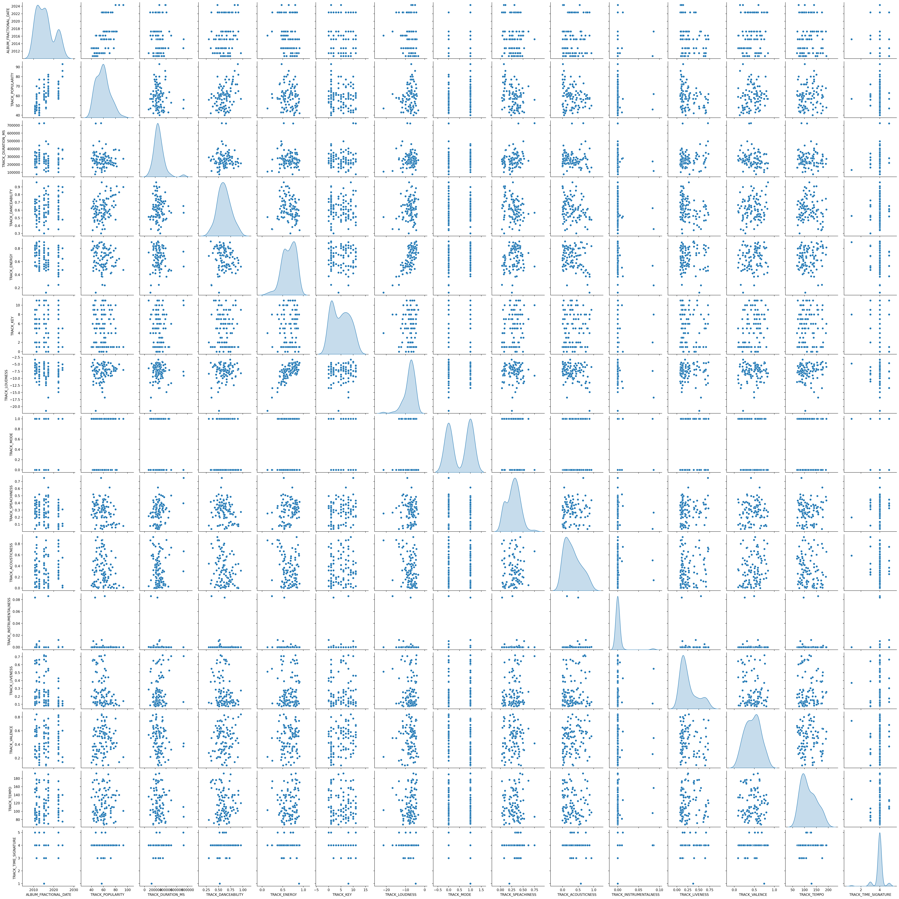
The pairplot above has A LOT of information, so let’s break down what it is that we are seeing.
Feature Analysis: - TRACK_TIME_SIGNATURE: An overwhelming amount of K Dot’s songs are in a value of 4 for this feature. Which the definition is: - >“An estimated time signature. The time signature (meter) is a notational convention to specify how many beats are in each bar (or measure). The time signature ranges from 3 to 7 indicating time signatures of”3/4”, to “7/4”.”
For Kendrick, this means there are 4 beats in each measure and a quarter note receives one count. According to https://www.skoove.com/, they say that a:
Skoove: “4/4 time signature gives music a steady, marching rhythm, perfect for getting your foot tapping.”
TRACK_TEMPO: When looking at tempo and duration, it seems that the much longer songs of K Dot tend to be in lower tempo, which makes sense. His longer songs tend to be more poetically-inclined and are of spoken-word instead of something like Money Trees for example.
TRACK_DANCEABILITY: For danceability, the middle ground of tempo seems to be the best.
- Overall, nothing too great here, even the aformentioned call outs, are sparse and not very linear/direct. So, they are to be taken with a grain of salt. The biggest value is that, by looking at the kernel density plot, most of his songs are slower tempo, hence the plot is right-skewed a bit.
TRACK_VALENCE: I just want to call out, this is probably my favorite measure because it algorithmically places a valuue on how positive the song is based on the tone. As Spotify calls out in the documentation: “Tracks with high valence sound more positive (e.g. happy, cheerful, euphoric), while tracks with low valence sound more negative (e.g. sad, depressed, angry)”
When looking at popularity it seems to have a relatively strong linear relationship with “happier” songs being more popular. With a couple songs being VERY popular and low valence.
Valence distribution is overall pretty normal. But nothing else to note.
TRACK_LOUDSNESS & TRACK_ENERGY: Both seem VERY positively correlated to each other.
TRACK_POPULARITY: What is a little troublesome, is that popularity is a mathematical value that decreases over time. Let’s see if we can reverse-engineer some of that logic in the later code.
# Let's now boil the ocean again, but instead of a graphical view, let's do a
# numerical representation using a correlation matrix.
plt.figure(figsize=(20, 20))
sns.heatmap(cleaned_df.corr(numeric_only=True), annot=True,
linecolor='black', cmap='RdYlBu',
linewidths=0.5, fmt=".2f",
vmin=-1, vmax=1, center=0,
annot_kws={"size": 14})
plt.title('Correlation plot of K Dot')
#plt.savefig("Outputs/02_corrplot.png")
plt.show()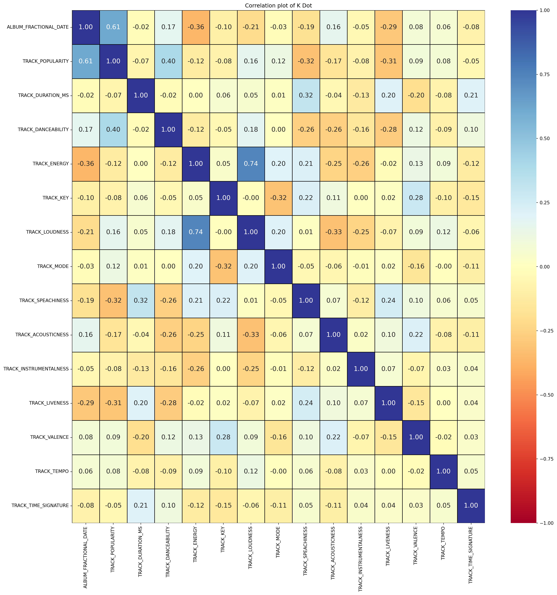
What is all of that mess even showing besides pretty squares..?
Well, in summary, it is showing that the below relationships are very strongly-related:
- ALBUM_FRACTIONAL_DATE and TRACK_POPULARITY: As we would expect with his most-recent drops
- TRACK_ENERGY and TRACK_LOUDNESS: As we had called out earlier.
- Both of the above are positive correlations.
Weaker, but worth calling out (negative) correlations: - TRACK_ENERGY and ALBUM_FRACTIONAL_DATE: Looks like K Dot has a negative trend on ‘energy’ (no pun intended) - TRACK_SPEACHINESS and TRACK_POPULARITY: Very ‘speachie’ tracks are less popular, BUT this makes A LOT of sense because his more speachie songs are also much longer and tend to be more poetery/spoken word than a hype song.
Nothing else exceptional.
# Let's reverse-engineer some of the algorithmicness of popularity.
# We will do this with the consideration that Money Trees and Not Like Us should
# have a similar value in popularity, much closer than what is currently showing.
# Or at the very least, Not Like Us should NOT be THAT much popular just because of
# recency.
# This will be done using a modified anti-decay factor/function.
# Define a modified exponential decay function
def antidecay_function(decayed_value, rate_of_decrease, time):
"""
Where:
a = Initial Amount
r = Rate of Decrease
t = Time
a = > 0
r = between 0 and 1 (non-inclusive)
d = output (decyaed value)
Original function to give the decay value is:
d = a(1 - r)**t
For us, it'll be:
a = d / ( (1 - r)**t )
"""
return decayed_value / ( (1 - rate_of_decrease) ** time)today = pd.to_datetime(datetime.now().date())
cleaned_df['DAYS_SINCE_RELEASE'] = today - cleaned_df['ALBUM_RELEASE_DATE']
cleaned_df['SCALED_DAYS_SINCE_RELEASE'] = minmax_scale(cleaned_df[['DAYS_SINCE_RELEASE']])
cleaned_df[['TRACK_NAME', 'DAYS_SINCE_RELEASE', 'SCALED_DAYS_SINCE_RELEASE']].head()| TRACK_NAME | DAYS_SINCE_RELEASE | SCALED_DAYS_SINCE_RELEASE | |
|---|---|---|---|
| 0 | We Cry Together | 772 days | 0.144951 |
| 1 | Not Like Us | 50 days | 0.000000 |
| 2 | euphoria | 54 days | 0.000803 |
| 3 | HiiiPower | 4740 days | 0.941578 |
| 4 | meet the grahams | 51 days | 0.000201 |
# Here we will use an iterative approach
best_rate = 0
lowest_RMSD = np.inf
for i in np.arange(0.1, 1, .01):
cleaned_df['ANTI_DECAY_POPULARITY'] = antidecay_function(decayed_value=cleaned_df['TRACK_POPULARITY'],
rate_of_decrease=i,
time=cleaned_df['SCALED_DAYS_SINCE_RELEASE'])
cleaned_df['SCALED_ANTIDECAY_POPULARITY'] = minmax_scale(cleaned_df[['ANTI_DECAY_POPULARITY']])
#root mean square deviation (broken out for better reading)
#grab mean value first for distance
mean_val = cleaned_df['SCALED_ANTIDECAY_POPULARITY'].mean()
#square the distances
squared_distances = (cleaned_df['SCALED_ANTIDECAY_POPULARITY'] - mean_val)**2
#Average distances and square root.
#We want to minimize this value to find our ideal rate of decrease.
RMSD = np.sqrt(squared_distances.mean())
if RMSD < lowest_RMSD:
lowest_RMSD = RMSD
best_rate = i
print(f'New best rate found! {best_rate}')
# Plots Comment out. They are histograms, and we are trying to find the most "normal".
# plt.hist(cleaned_df['SCALED_ANTIDECAY_POPULARITY'])
# plt.title(f'Rate of Decrease: {i}.\nRMSD: {RMSD}')
# plt.show()
print(f'Lowest RMSD: {lowest_RMSD}')
print(f'Best Rate of Decay: {best_rate}')New best rate found! 0.1
New best rate found! 0.34999999999999987
New best rate found! 0.4199999999999998
New best rate found! 0.4299999999999998
New best rate found! 0.43999999999999984
New best rate found! 0.44999999999999984
New best rate found! 0.45999999999999985
New best rate found! 0.46999999999999986
New best rate found! 0.47999999999999976
Lowest RMSD: 0.2114381640282861
Best Rate of Decay: 0.47999999999999976Looks like we found our best rate of decay to reduce the room mean square difference from mean! Let’s cement these findings in our columns now.
cleaned_df['ANTI_DECAY_POPULARITY'] = antidecay_function(decayed_value=cleaned_df['TRACK_POPULARITY'],
rate_of_decrease=best_rate, #.14
time=cleaned_df['SCALED_DAYS_SINCE_RELEASE'])
cleaned_df['SCALED_ANTIDECAY_POPULARITY'] = minmax_scale(cleaned_df[['ANTI_DECAY_POPULARITY']]) * 100
# Let's take a look at how our songs were ranked with our new values.
with pd.option_context('display.max_rows', 100):
display(cleaned_df[['ALBUM_NAME', 'TRACK_NAME', 'TRACK_POPULARITY', 'SCALED_ANTIDECAY_POPULARITY']].sort_values(by='SCALED_ANTIDECAY_POPULARITY', ascending=False)
)| ALBUM_NAME | TRACK_NAME | TRACK_POPULARITY | SCALED_ANTIDECAY_POPULARITY | |
|---|---|---|---|---|
| 16 | good kid, m.A.A.d city | Money Trees | 77 | 100.000000 |
| 9 | Section.80 | A.D.H.D | 70 | 93.977070 |
| 5 | To Pimp A Butterfly | Alright | 77 | 79.594970 |
| 37 | good kid, m.A.A.d city | Bitch, Don’t Kill My Vibe | 68 | 78.022701 |
| 24 | DAMN. | HUMBLE. | 82 | 73.528526 |
| 3 | Section.80 | HiiiPower | 62 | 73.176490 |
| 34 | Section.80 | Hol' Up | 61 | 70.576417 |
| 29 | Section.80 | Chapter Six | 61 | 70.576417 |
| 11 | DAMN. | PRIDE. | 80 | 69.588123 |
| 17 | DAMN. | LOVE. FEAT. ZACARI. | 80 | 69.588123 |
| 15 | To Pimp A Butterfly | King Kunta | 72 | 68.710362 |
| 36 | good kid, m.A.A.d city | m.A.A.d city | 63 | 65.813090 |
| 40 | Section.80 | Rigamortus | 59 | 65.376272 |
| 33 | DAMN. | DNA. | 77 | 63.677518 |
| 28 | To Pimp A Butterfly | Wesley's Theory | 69 | 62.179596 |
| 41 | Section.80 | Blow My High (Members Only) | 57 | 60.176127 |
| 10 | DAMN. | LOYALTY. FEAT. RIHANNA. | 74 | 57.766913 |
| 22 | To Pimp A Butterfly | These Walls | 65 | 53.471910 |
| 51 | Section.80 | Poe Mans Dreams (His Vice) (feat. GLC) | 54 | 52.375910 |
| 14 | DAMN. | DUCKWORTH. | 70 | 49.886107 |
| 72 | Section.80 | F*ck Your Ethnicity | 53 | 49.775838 |
| 58 | Section.80 | Ronald Reagan Era | 52 | 47.175765 |
| 78 | Overly Dedicated | Ignorance Is Bliss | 50 | 47.038330 |
| 60 | To Pimp A Butterfly | i | 62 | 46.941144 |
| 8 | DAMN. | ELEMENT. | 68 | 45.945704 |
| 46 | To Pimp A Butterfly | How Much A Dollar Cost | 61 | 44.764223 |
| 66 | To Pimp A Butterfly | Institutionalized | 61 | 44.764223 |
| 77 | Overly Dedicated | She Needs Me (Remix) | 49 | 44.337004 |
| 98 | Overly Dedicated | Barbed Wire | 49 | 44.337004 |
| 26 | untitled unmastered. | untitled 08 | 09.06.2014. | 63 | 42.890100 |
| 1 | Not Like Us | Not Like Us | 93 | 42.608154 |
| 45 | To Pimp A Butterfly | The Blacker The Berry | 60 | 42.587301 |
| 48 | To Pimp A Butterfly | u | 60 | 42.587301 |
| 20 | DAMN. | XXX. FEAT. U2. | 66 | 42.005301 |
| 86 | Section.80 | Keisha's Song (Her Pain) (feat. Ashtro Bot) | 50 | 41.975620 |
| 70 | Section.80 | Tammy's Song (Her Evils) | 50 | 41.975620 |
| 76 | Overly Dedicated | Opposites Attract (Tomorrow W/O Her) | 48 | 41.635677 |
| 81 | Overly Dedicated | P&P 1.5 | 48 | 41.635677 |
| 55 | To Pimp A Butterfly | Hood Politics | 59 | 40.410379 |
| 32 | DAMN. | YAH. | 65 | 40.035099 |
| 13 | DAMN. | FEEL. | 65 | 40.035099 |
| 84 | Section.80 | Kush & Corinthians (feat. BJ The Chicago Kid) | 49 | 39.375548 |
| 85 | Overly Dedicated | Growing Apart (To Get Closer) | 47 | 38.934350 |
| 50 | To Pimp A Butterfly | You Ain't Gotta Lie (Momma Said) | 58 | 38.233457 |
| 21 | DAMN. | FEAR. | 64 | 38.064897 |
| 94 | Section.80 | No Make-Up (Her Vice) (feat. Colin Munroe) | 48 | 36.775475 |
| 71 | good kid, m.A.A.d city | Poetic Justice | 51 | 36.510025 |
| 65 | good kid, m.A.A.d city | Backseat Freestyle | 51 | 36.510025 |
| 93 | Overly Dedicated | Alien Girl (Today W/ Her) | 46 | 36.233023 |
| 30 | DAMN. | LUST. | 63 | 36.094696 |
| 62 | To Pimp A Butterfly | Complexion (A Zulu Love) | 57 | 36.056536 |
| 68 | To Pimp A Butterfly | For Free? - Interlude | 57 | 36.056536 |
| 47 | To Pimp A Butterfly | Momma | 57 | 36.056536 |
| 44 | untitled unmastered. | untitled 02 | 06.23.2014. | 59 | 34.577839 |
| 73 | DAMN. | BLOOD. | 62 | 34.124494 |
| 39 | To Pimp A Butterfly | Mortal Man | 56 | 33.879614 |
| 74 | To Pimp A Butterfly | For Sale? - Interlude | 56 | 33.879614 |
| 80 | Overly Dedicated | Average Joe | 45 | 33.531697 |
| 2 | euphoria | euphoria | 86 | 32.838780 |
| 91 | Section.80 | Chapter Ten | 46 | 31.575330 |
| 75 | Overly Dedicated | Cut You Off (To Grow Closer) | 44 | 30.830370 |
| 83 | Overly Dedicated | H.O.C | 44 | 30.830370 |
| 49 | DAMN. | GOD. | 60 | 30.184091 |
| 64 | good kid, m.A.A.d city | Swimming Pools (Drank) - Extended Version | 48 | 29.184258 |
| 99 | Section.80 | Ab-Souls Outro (feat. Ab-Soul) | 45 | 28.975258 |
| 79 | Overly Dedicated | Michael Jordan | 43 | 28.129043 |
| 18 | Mr. Morale & The Big Steppers | N95 | 75 | 27.798317 |
| 59 | good kid, m.A.A.d city | Sing About Me, I'm Dying Of Thirst | 47 | 26.742336 |
| 43 | untitled unmastered. | untitled 06 | 06.30.2014. | 55 | 26.265579 |
| 82 | Overly Dedicated | R.O.T.C (Interlude) | 42 | 25.427717 |
| 6 | Mr. Morale & The Big Steppers | Count Me Out | 73 | 24.709615 |
| 4 | meet the grahams | meet the grahams | 80 | 24.361940 |
| 56 | untitled unmastered. | untitled 05 | 09.21.2014. | 54 | 24.187513 |
| 53 | untitled unmastered. | untitled 03 | 05.28.2013. | 54 | 24.187513 |
| 31 | Mr. Morale & The Big Steppers | United In Grief | 72 | 23.165264 |
| 12 | Mr. Morale & The Big Steppers | Rich Spirit | 72 | 23.165264 |
| 25 | Mr. Morale & The Big Steppers | Die Hard | 72 | 23.165264 |
| 42 | untitled unmastered. | untitled 07 | 2014 - 2016 | 53 | 22.109448 |
| 89 | good kid, m.A.A.d city | The Art of Peer Pressure | 45 | 21.858492 |
| 95 | good kid, m.A.A.d city | good kid | 45 | 21.858492 |
| 19 | Mr. Morale & The Big Steppers | Father Time (feat. Sampha) | 68 | 16.987860 |
| 92 | good kid, m.A.A.d city | Real | 43 | 16.974648 |
| 97 | good kid, m.A.A.d city | Sherane a.k.a Master Splinter’s Daughter | 43 | 16.974648 |
| 96 | good kid, m.A.A.d city | Compton | 42 | 14.532726 |
| 7 | Mr. Morale & The Big Steppers | Silent Hill | 65 | 12.354808 |
| 88 | untitled unmastered. | untitled 01 | 08.19.2014. | 48 | 11.719123 |
| 90 | good kid, m.A.A.d city | Bitch, Don’t Kill My Vibe - Remix | 40 | 9.648881 |
| 87 | untitled unmastered. | untitled 04 | 08.14.2014. | 47 | 9.641058 |
| 27 | Mr. Morale & The Big Steppers | Savior | 63 | 9.266106 |
| 0 | Mr. Morale & The Big Steppers | We Cry Together | 62 | 7.721755 |
| 23 | Mr. Morale & The Big Steppers | Purple Hearts | 62 | 7.721755 |
| 35 | Mr. Morale & The Big Steppers | Mr. Morale | 61 | 6.177404 |
| 52 | Mr. Morale & The Big Steppers | Mirror | 61 | 6.177404 |
| 38 | Mr. Morale & The Big Steppers | The Heart Part 5 | 60 | 4.633053 |
| 61 | Mr. Morale & The Big Steppers | Worldwide Steppers | 60 | 4.633053 |
| 54 | Mr. Morale & The Big Steppers | Mother I Sober (feat. Beth Gibbons of Portishead) | 58 | 1.544351 |
| 69 | Mr. Morale & The Big Steppers | Crown | 58 | 1.544351 |
| 67 | Mr. Morale & The Big Steppers | Savior - Interlude | 57 | 0.000000 |
| 57 | Mr. Morale & The Big Steppers | Auntie Diaries | 57 | 0.000000 |
| 63 | Mr. Morale & The Big Steppers | Rich - Interlude | 57 | 0.000000 |
Section Takeaway:
Though it reduces the score of Not Like Us, for example, by A LOT simply because it’s much too new when compared to something like Money Trees, I can’t say I entirely disagree with the new values.
A similar metric could’ve been achieved with total play counts I believe, and arriving to another mathematical way of popularity, but I think this way makes sense.
What was surprising to me, was how his album “Mr. Morale & The Big Steppers” (MMTBS) was basically clustered all the way to the bottom of lowest popularity. I imagine this must be, in part, because MMTBS is not very old when looking at albums like GKMC. Additionally, some people hint at MMTBS having been “a flop” in commercial terms.
What I certainly do not agree with (on the original popularity ranking) is how albums were being clustered and sorted almost just by how old they were instead of their actual popularity, grossly misidentifying the most-popular songs. I think the new value we’ve arrived at does a strong job of identifying truly popular songs, but harshly punishes songs that are relatively recent AND NOT highly popular.
This gives me confidence to preceed with our new popularity ranking.
plt.figure(figsize=(20,20))
for num, i in enumerate(cleaned_df.select_dtypes(include=['int', 'float']), start=1):
plt.subplot(6, 3, num)
plt.hist(cleaned_df[i], density=True, label=str(i))
plt.legend()
plt.xlabel(str(i))
plt.show()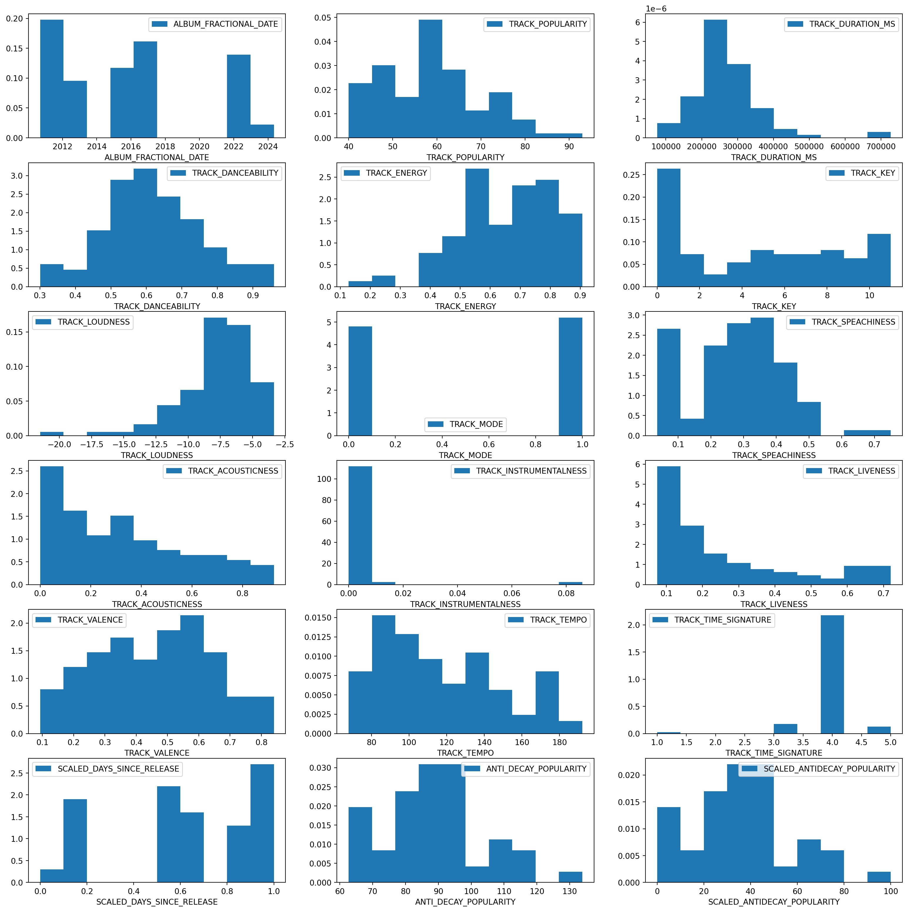
Above is a simple histogram plot of each numeric column from the dataset.
Nothing too critical. Namely, Kendrick’s track danceability seem to follow a relatively normal distribution, while his songs tend to lean towards loud and his acousticness and liveness tend to not be very high.
Additionally, most of his songs fall between the 200K - 300K MS duration. Though, a few songs have a much longer duration of more than double that.
However, now we can see the visual transformation from the raw (originall) track popularity to our anti-decay value, and finally our scaled anti-decay value to bring it back into a range of 0-100.
So, now it’s worth calling out for consistency, that the SCALED_ANTIDECAY_POPULARITY is not a relative value. I.e., a value of 0 is that the song has never been listened to, it’s just showing: “This is the least popular song of K Dot’s discography, when accounting for the amount of days the song has been released using the decay function.”
lm_plot = sns.lmplot(data=cleaned_df, x='TRACK_DURATION_MS',
y='SCALED_ANTIDECAY_POPULARITY',
hue='ALBUM_NAME', ci=10, robust=True)
lm_plot.set(title="Track's Duration Effect on Calculated Popularity\nWith Robust Regression Per Album")
plt.xticks(rotation=45)
plt.figtext(0.1, -0.1, 'Footnote: C.I. = 10', wrap=True, horizontalalignment='left', fontsize=10)
plt.show()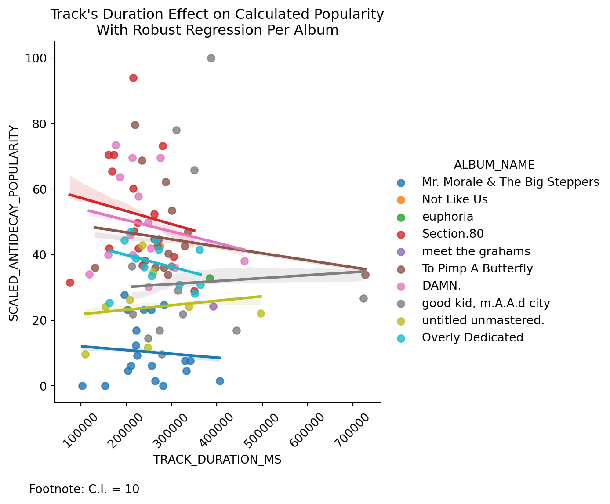
What are seeing in the plot above? Well, a lot of extrapolation on very few data points, but an interesting extrapolation nonetheless. Naturally, there are going to be outliers within-albums, so we use a Robust regression to de-weight those outliers a bit.
We also only use a very small confidence interval of 10 to not overcrowd the plot with data.
What I find the most interesting is that the album “untitled unmastered.” has an upward trend for track duration while “DAMN.” has a negative fit for track duration. Now, kee in mind “DAMN.” was released mid 2017, while “untitled unmastered” was released early 2016. So, not a whole lot of difference I would imagine for the popularity reversal using the decay function to affect it. Even then, we are looking at the within-album trend instead of the between-album trend. Which should be controlling for that difference anyway since each album has the same days since release, and the other difference would be the original popularity we transformed.
#Check the release dates here
cleaned_df[cleaned_df['ALBUM_NAME'].str.contains('untitled|DAMN.')]\
.get(['ALBUM_NAME', 'ALBUM_RELEASE_DATE'])\
.drop_duplicates()| ALBUM_NAME | ALBUM_RELEASE_DATE | |
|---|---|---|
| 8 | DAMN. | 2017-04-14 |
| 26 | untitled unmastered. | 2016-03-04 |
What is the opinion of this?
The “DAMN.” album, having won the Pulitzer Prize, likely attracted A LOT of love from Kendrick’s non-core audience. Likely some folks that just wanted to listen to the hottest songs, or at least not the longest ones. In the other hand, “untitled unmastered.” targets K Dot’s core audiance in the heart of hearts. His poetic spoken-word approach with a grungy-type feeling filled with mystery appeals more to those folks, that want to stick around for the longer songs to learn about Kendrick. Additionally, just the fact alone that the album’s name is “untitled unmastered” and all of the tracks are “untitled ## ..” goes to show what audience he made it for, or at least had in mind.
My theory above can also be best-shown by looking at the mean Acousticness, Speachiness, Energy, and Danceability, over the two different albums using the code below:
cleaned_df[cleaned_df['ALBUM_NAME'].str.contains('untitled|DAMN.')]\
.groupby('ALBUM_NAME')\
.aggregate('mean', numeric_only=True)\
.filter(items=['TRACK_ACOUSTICNESS', 'TRACK_INSTRUMENTALNESS', 'TRACK_SPEACHINESS',
'TRACK_ENERGY', 'TRACK_DANCEABILITY'])| TRACK_ACOUSTICNESS | TRACK_INSTRUMENTALNESS | TRACK_SPEACHINESS | TRACK_ENERGY | TRACK_DANCEABILITY | |
|---|---|---|---|---|---|
| ALBUM_NAME | |||||
| DAMN. | 0.175444 | 0.006142 | 0.275729 | 0.584857 | 0.663000 |
| untitled unmastered. | 0.442025 | 0.000001 | 0.328387 | 0.489625 | 0.638625 |
table_data = []
for feature in [feat_num for feat_num in cleaned_df.select_dtypes(include=['int', 'float']).columns\
if feat_num not in ['ALBUM_FRACTIONAL_DATE',
'TRACK_TIME_SIGNATURE',
'TRACK_KEY', 'TRACK_MODE',
'TRACK_TIME_SIGNATURE',
'ANTI_DECAY_POPULARITY',
'SCALED_DAYS_SINCE_RELEASE']]:
max_track = cleaned_df[cleaned_df[feature] == cleaned_df[feature].max()].get('TRACK_NAME').values[0]
min_track = cleaned_df[cleaned_df[feature] == cleaned_df[feature].min()].get('TRACK_NAME').values[0]
max_album = cleaned_df[cleaned_df['TRACK_NAME'] == max_track].get('ALBUM_NAME').values[0]
min_album = cleaned_df[cleaned_df['TRACK_NAME'] == min_track].get('ALBUM_NAME').values[0]
# print(f"Song with Max {feature.lower().split(sep='_')[1]}: {max_track}")
# print(f"Song with Min {feature.lower().split(sep='_')[1]}: {min_track}")
# print("\n")
# Decided to print out using a pretty tabulate format, instead of a general print statement.
table_data.append([feature, 'Max', max_album, max_track])
table_data.append([feature, 'Min', min_album, min_track])
print(tabulate(table_data,
headers=['Feature', 'Type', 'Album Name', 'Track Name'],
tablefmt='pretty', stralign='left'))+-----------------------------+------+-------------------------------+--------------------------------------+
| Feature | Type | Album Name | Track Name |
+-----------------------------+------+-------------------------------+--------------------------------------+
| TRACK_POPULARITY | Max | Not Like Us | Not Like Us |
| TRACK_POPULARITY | Min | good kid, m.A.A.d city | Bitch, Don’t Kill My Vibe - Remix |
| TRACK_DURATION_MS | Max | To Pimp A Butterfly | Mortal Man |
| TRACK_DURATION_MS | Min | Section.80 | Chapter Ten |
| TRACK_DANCEABILITY | Max | Section.80 | Blow My High (Members Only) |
| TRACK_DANCEABILITY | Min | To Pimp A Butterfly | For Sale? - Interlude |
| TRACK_ENERGY | Max | good kid, m.A.A.d city | Compton |
| TRACK_ENERGY | Min | untitled unmastered. | untitled 04 | 08.14.2014. |
| TRACK_LOUDNESS | Max | Overly Dedicated | Average Joe |
| TRACK_LOUDNESS | Min | untitled unmastered. | untitled 04 | 08.14.2014. |
| TRACK_SPEACHINESS | Max | To Pimp A Butterfly | Mortal Man |
| TRACK_SPEACHINESS | Min | Mr. Morale & The Big Steppers | Crown |
| TRACK_ACOUSTICNESS | Max | Section.80 | Tammy's Song (Her Evils) |
| TRACK_ACOUSTICNESS | Min | DAMN. | HUMBLE. |
| TRACK_INSTRUMENTALNESS | Max | DAMN. | BLOOD. |
| TRACK_INSTRUMENTALNESS | Min | Mr. Morale & The Big Steppers | We Cry Together |
| TRACK_LIVENESS | Max | To Pimp A Butterfly | i |
| TRACK_LIVENESS | Min | Mr. Morale & The Big Steppers | Worldwide Steppers |
| TRACK_VALENCE | Max | Section.80 | Blow My High (Members Only) |
| TRACK_VALENCE | Min | untitled unmastered. | untitled 02 | 06.23.2014. |
| TRACK_TEMPO | Max | Overly Dedicated | Opposites Attract (Tomorrow W/O Her) |
| TRACK_TEMPO | Min | Section.80 | Chapter Six |
| SCALED_ANTIDECAY_POPULARITY | Max | good kid, m.A.A.d city | Money Trees |
| SCALED_ANTIDECAY_POPULARITY | Min | Mr. Morale & The Big Steppers | Auntie Diaries |
+-----------------------------+------+-------------------------------+--------------------------------------+There’s quite a bit here, but nothing that we haven’t quite already examined in our plots of histograms. However, this is a good way to look at the extreme ends of our data points in a qualitative standpoint, instead of purely quantitatively.
album_pop_and_length = cleaned_df.groupby(['ALBUM_FRACTIONAL_DATE', 'ALBUM_NAME'])\
.aggregate(AVG_ALBUM_POPULARITY=('SCALED_ANTIDECAY_POPULARITY', 'mean'),
AVG_ALBUM_DURATION=('TRACK_DURATION_MS', 'mean'))\
.reset_index()
lm_plot2 = sns.lmplot(data=album_pop_and_length,
x='AVG_ALBUM_DURATION', y='AVG_ALBUM_POPULARITY',
ci=25, robust=True, aspect=2, height=6)
lm_plot2.set(title="Track's Duration Effect on Album Mean Relative Popularity \nWith Robust Regression")
plt.figtext(0.5, -0.1, "Confidence Interval: 25", fontsize=10, ha='center')
plt.show()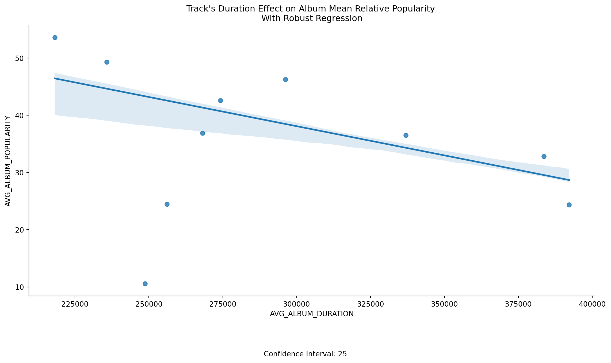
What do we see now? Simply, on average, we see that Kendrick’s average album popularity tends to decrease as the average album duration increases.
lm_plot3 = sns.lmplot(data=album_pop_and_length,
x='ALBUM_FRACTIONAL_DATE', y='AVG_ALBUM_POPULARITY',
ci=25, robust=True, aspect=2, height=6)
lm_plot2.set(title="Mean Relative Album Popularity Over Time \nWith Robust Regression")
plt.figtext(0.5, -0.1, "Confidence Interval: 25", fontsize=10, ha='center')
plt.show()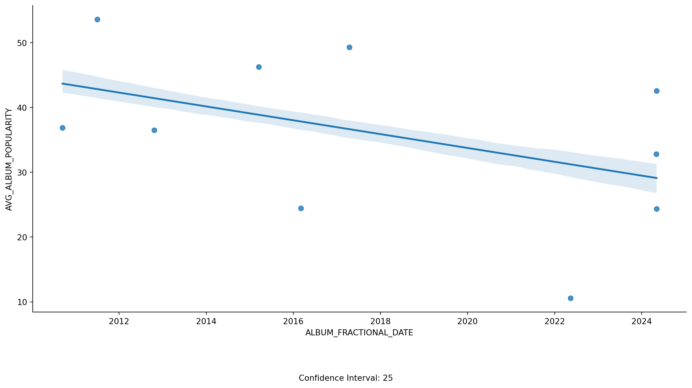
Now, this plot above is a bit misleading. If reading it at face value, one would assume that over time, Kedrick is losing popularity. However, we must keep in mind that our y-value in this case, is relative. Moreover, a big part driving this decrease is because of the last 3 songs not having a lot of time to really yet be established as truly popular or not, given our anti-decay formula. Lastly, since the value is relative, we also get the “negative” impact of ‘Mr. Morale & The Big Steppers’ being the lowest and after 2022.
For reference, if I had plotted (not shown) the same plot but using the original popularity value, the line was VERY linearly positive. Which we would expect since the original popularity rating was developed that way!
With that, that concludes this section of our code, let’s dive into some machine learning algorithms now!
Machine Learning Models
For this specific section, we’re going to our data a bit and build some machine learning models to try and see if it can accurately predict whether I (personally) would REALLY like a Kedrick Lamar song, or not so much.
This will be using manually imputted values of 1 on songs I really enjoy, and 0 on songs I did not enjoy as much.
Though the above is a classification model, the same can be done using regressions models using a “likeness” value from 0 to 100, for example!
# Let's first manually categorize whether we VERY MUCH like a Kendrick Lamar song
# or not so much. We skip this in our iteration, and use the harded values instead.
favorites = {}
for index, row in cleaned_df.iterrows():
song = row['TRACK_NAME']
is_favorite = simpledialog.askinteger('Song Categorizer',
prompt=f'Do you like song: {song}: 0 or 1')
favorites[song] = is_favorite# To not have to cycle through again, I will hardcore the results below
favorites =\
{'Alright': 1,
'Silent Hill': 0,
'Count Me Out': 0,
'Not Like Us': 1,
'meet the grahams': 1,
'A.D.H.D': 1,
'FEEL.': 1,
'HiiiPower': 0,
'Rich Spirit': 1,
'ELEMENT.': 1,
'euphoria': 1,
'LOYALTY. FEAT. RIHANNA.': 1,
'These Walls': 0,
'N95': 1,
'Father Time (feat. Sampha)': 1,
'FEAR.': 1,
'untitled 08 | 09.06.2014.': 0,
'DUCKWORTH.': 1,
'Savior': 1,
'King Kunta': 1,
'Purple Hearts': 0,
'PRIDE.': 0,
'LUST.': 1,
'We Cry Together': 1,
"Hol' Up": 0,
'Die Hard': 1,
'Chapter Six': 0,
'XXX. FEAT. U2.': 0,
'HUMBLE.': 1,
"Wesley's Theory": 1,
'YAH.': 1,
'LOVE. FEAT. ZACARI.': 1,
'Money Trees': 1,
'DNA.': 1,
'United In Grief': 1,
'Mr. Morale': 0,
'BLOOD.': 0,
'm.A.A.d city': 1,
'Bitch, Don’t Kill My Vibe': 1,
'The Heart Part 5': 1,
'Blow My High (Members Only)': 0,
'u': 1,
'Rigamortus': 0,
'Mother I Sober (feat. Beth Gibbons of Portishead)': 1,
'How Much A Dollar Cost': 0,
'The Blacker The Berry': 1,
'Hood Politics': 1,
'untitled 02 | 06.23.2014.': 0,
'untitled 03 | 05.28.2013.': 0,
'Poe Mans Dreams (His Vice) (feat. GLC)': 0,
'Institutionalized': 0,
'Momma': 1,
'Ronald Reagan Era': 0,
'untitled 07 | 2014 - 2016': 1,
"You Ain't Gotta Lie (Momma Said)": 1,
'Complexion (A Zulu Love)': 0,
'GOD.': 1,
'i': 1,
'untitled 06 | 06.30.2014.': 0,
'Mirror': 0,
'Mortal Man': 1,
'For Free? - Interlude': 0,
'Auntie Diaries': 0,
'Rich - Interlude': 0,
'untitled 05 | 09.21.2014.': 0,
"Tammy's Song (Her Evils)": 1,
'Crown': 0,
'Worldwide Steppers': 0,
'F*ck Your Ethnicity': 1,
"Sing About Me, I'm Dying Of Thirst": 1,
'Swimming Pools (Drank) - Extended Version': 1,
'For Sale? - Interlude': 0,
'Backseat Freestyle': 1,
'Savior - Interlude': 1,
'Poetic Justice': 1,
'Opposites Attract (Tomorrow W/O Her)': 1,
'Kush & Corinthians (feat. BJ The Chicago Kid)': 1,
'Average Joe': 1,
'Cut You Off (To Grow Closer)': 1,
'She Needs Me (Remix)': 1,
'Michael Jordan': 0,
'P&P 1.5': 0,
'Growing Apart (To Get Closer)': 1,
'H.O.C': 0,
'Ignorance Is Bliss': 0,
"Keisha's Song (Her Pain) (feat. Ashtro Bot)": 1,
'R.O.T.C (Interlude)': 0,
'Chapter Ten': 0,
'Barbed Wire': 1,
'No Make-Up (Her Vice) (feat. Colin Munroe)': 1,
'untitled 04 | 08.14.2014.': 0,
'Alien Girl (Today W/ Her)': 1,
'The Art of Peer Pressure': 1,
'untitled 01 | 08.19.2014.': 1,
'Ab-Souls Outro (feat. Ab-Soul)': 0,
'Bitch, Don’t Kill My Vibe - Remix': 0,
'good kid': 1,
'Real': 1,
'Compton': 1,
'Sherane a.k.a Master Splinter’s Daughter': 1}cleaned_df['IS_FAVORITE'] = favorites.values()
cleaned_df.groupby('IS_FAVORITE').size() # Check class imbalancedIS_FAVORITE
0 39
1 61
dtype: int64Now, our target variable isn’t grossly inbalaned, but there is some inbalance nonetheless.
Let’s try and correct for that by manually some potentially repetitive songs (Remix versions), for example. Any additional differences, will have to be handled differently. Whether we use weights for the classes, undersampling, or SMOTE for oversampling.
Though we will use some models that this inbalance does not matter as much (like random forest), it should still be corrected for the best approaches.
We are also going to drop unneeded columns and scale all values for learning models before we begin.
# Duplicated songs was just 1
songs_to_drop = ['Bitch, Don’t Kill My Vibe - Remix']
# Let's drop that row, and all unneeded columns now.
df_ML = cleaned_df[~cleaned_df['TRACK_NAME'].isin(songs_to_drop)]\
.drop(columns=['ALBUM_ID', 'ALBUM_NAME', 'ALBUM_RELEASE_DATE',
'TRACK_ID', 'TRACK_POPULARITY', 'ALBUM_FRACTIONAL_DATE'])\
.reset_index(drop=True)\
.assign(**pd.get_dummies(data=cleaned_df[['TRACK_KEY', 'TRACK_MODE',
'TRACK_TIME_SIGNATURE']],
drop_first=True,
columns=['TRACK_KEY', 'TRACK_MODE',
'TRACK_TIME_SIGNATURE']))\
.drop(columns=['TRACK_KEY', 'TRACK_MODE',
'TRACK_TIME_SIGNATURE'])
df_ML = df_ML.reindex(columns=['TRACK_NAME'] +\
[col for col in df_ML.columns if col not in ['IS_FAVORITE',
'TRACK_NAME']] +\
['IS_FAVORITE']
)
df_og = df_ML.copy() #Will be used for index values later on.This pairplot below is just used as a quick spot-check analysis since we already performed an extensive EDA on all of the features against the ranking of the song.
So, what do I infer from it? I would assume our predictive modeling abilities will be akin to that of a coin flip, or perhaps a bit better, at most. However, we will still run through several examples, I would feel relatively confident saying we would need more data or better features.
Why do I infer that? I do so because when looking at all the scatter plots, none have a very clear seperation between the classes. Furthermore, when looking at the density plot (diagonals), we can see that each class (0 and 1) can be very easily sub-sampled from the other in a random sampling.
sns.pairplot(df_ML.select_dtypes([int, float]), hue='IS_FAVORITE').add_legend()
Data Splitting
# First things first, we need to split the data. Then we will standardize after
# to avoid data leakage.
X = df_ML.drop(columns=['TRACK_NAME', 'IS_FAVORITE'])
y = df_ML['IS_FAVORITE']
X_train, X_test, y_train, y_test = train_test_split(X, y,
test_size=0.3,
random_state=5)Scaling The Data
# Now we can scale the data
cols_to_scale = ['TRACK_DURATION_MS',
'TRACK_DANCEABILITY',
'TRACK_ENERGY',
'TRACK_LOUDNESS',
'TRACK_SPEACHINESS',
'TRACK_ACOUSTICNESS',
'TRACK_INSTRUMENTALNESS',
'TRACK_LIVENESS',
'TRACK_VALENCE',
'TRACK_TEMPO']
scaler = StandardScaler()
X_train_scaled = scaler.fit_transform(X_train[cols_to_scale])
X_test_scaled = scaler.transform(X_test[cols_to_scale])
# Let's keep it in pandas dataframe for better visuals
X_train_scaled_df = pd.DataFrame(X_train_scaled, columns=cols_to_scale, index=X_train.index)
X_test_scaled_df = pd.DataFrame(X_test_scaled, columns=cols_to_scale, index=X_test.index)
X_train_final = pd.concat([X_train_scaled_df, X_train.drop(columns=cols_to_scale + ['DAYS_SINCE_RELEASE'])], axis=1)
X_test_final = pd.concat([X_test_scaled_df, X_test.drop(columns=cols_to_scale + ['DAYS_SINCE_RELEASE'])], axis=1)
y_train_final = pd.DataFrame(y_train)
y_test_final = pd.DataFrame(y_test)
with pd.option_context('display.max_columns', None):
display(X_train_final.head())| TRACK_DURATION_MS | TRACK_DANCEABILITY | TRACK_ENERGY | TRACK_LOUDNESS | TRACK_SPEACHINESS | TRACK_ACOUSTICNESS | TRACK_INSTRUMENTALNESS | TRACK_LIVENESS | TRACK_VALENCE | TRACK_TEMPO | SCALED_DAYS_SINCE_RELEASE | ANTI_DECAY_POPULARITY | SCALED_ANTIDECAY_POPULARITY | TRACK_KEY_1 | TRACK_KEY_2 | TRACK_KEY_3 | TRACK_KEY_4 | TRACK_KEY_5 | TRACK_KEY_6 | TRACK_KEY_7 | TRACK_KEY_8 | TRACK_KEY_9 | TRACK_KEY_10 | TRACK_KEY_11 | TRACK_MODE_1 | TRACK_TIME_SIGNATURE_3 | TRACK_TIME_SIGNATURE_4 | TRACK_TIME_SIGNATURE_5 | |
|---|---|---|---|---|---|---|---|---|---|---|---|---|---|---|---|---|---|---|---|---|---|---|---|---|---|---|---|---|
| 6 | 0.165911 | 1.122719 | -1.565181 | -0.016192 | -1.472388 | 1.621521 | -0.191745 | -0.611989 | 0.165433 | 0.588869 | 0.144951 | 80.258014 | 24.709615 | False | False | False | True | False | False | False | False | False | False | False | False | False | True | False |
| 88 | -0.221561 | -0.421087 | -0.523470 | -1.668265 | 0.919404 | 0.082846 | -0.191745 | -0.967774 | -1.906121 | -0.397300 | 0.598876 | 71.010070 | 11.719123 | False | True | False | False | False | False | False | False | False | False | False | True | False | True | False |
| 64 | 0.491294 | 0.673066 | -1.197519 | -0.095939 | 0.911787 | -0.787604 | -0.189854 | 1.811867 | -1.089245 | -1.267178 | 0.845613 | 83.443516 | 29.184258 | True | False | False | False | False | False | False | False | False | False | False | True | False | True | False |
| 26 | -0.353683 | 1.677290 | -0.931984 | -0.742644 | -0.611648 | -0.229285 | -0.191572 | -0.821590 | 1.185193 | 0.154985 | 0.598876 | 93.200717 | 42.890100 | False | False | False | False | False | False | False | False | False | False | True | False | False | True | False |
| 48 | 0.002388 | -1.650137 | 0.933563 | 0.761044 | 1.125067 | -0.185323 | -0.191745 | 1.043327 | 0.619253 | -1.347320 | 0.669946 | 92.985154 | 42.587301 | False | False | False | False | False | False | False | False | False | False | True | False | False | True | False |
Random Forest
best_rf = None
best_rf_accuracy = 0
best_rf_predict = None
for est in [50, 100, 150, 200, 250]:
rf = RandomForestClassifier(n_estimators=est,
class_weight='balanced',
random_state=5)
rf.fit(X_train_final, y_train_final.to_numpy().ravel())
rf_predict = rf.predict(X_test_final)
rf_balanced_accuracy = balanced_accuracy_score(y_test_final, rf_predict)
if rf_balanced_accuracy > best_rf_accuracy:
best_rf_accuracy = rf_balanced_accuracy
best_rf_predict = rf_predict
best_rf = rf
print('Num of estimators: ', best_rf.n_estimators)
print('Best Score: ', best_rf_accuracy)
rf_conf_matrix = confusion_matrix(y_test_final, best_rf_predict)
# Plot confusion matrix
plt.figure(figsize=(8, 6))
sns.heatmap(rf_conf_matrix, annot=True, fmt='d', cmap='Blues')
plt.xlabel('Predicted Labels')
plt.ylabel('Actual Labels')
plt.title('Confusion Matrix')
plt.show()Num of estimators: 50
Best Score: 0.4444444444444444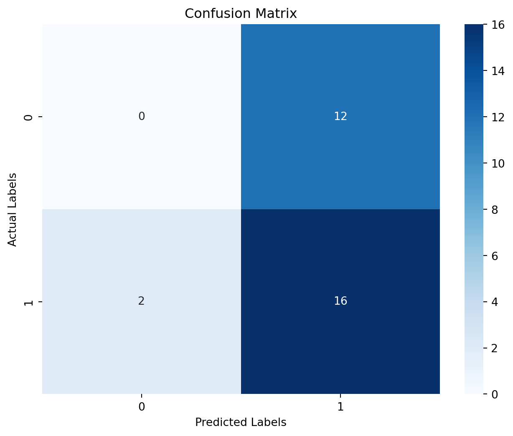
# Create a dictionary of features and their importances
feature_importance_dict = dict(zip(best_rf.feature_names_in_, best_rf.feature_importances_))
# Sort the dictionary by importances in descending order
sorted_feature_importance = dict(sorted(feature_importance_dict.items(), key=lambda item: item[1], reverse=True))
# Plot the sorted feature importances
plt.bar(sorted_feature_importance.keys(), sorted_feature_importance.values(), color='steelblue')
plt.xticks(rotation=90)
plt.xlabel('Features')
plt.ylabel('Importance')
plt.title('Feature Importance Sorted')
plt.show()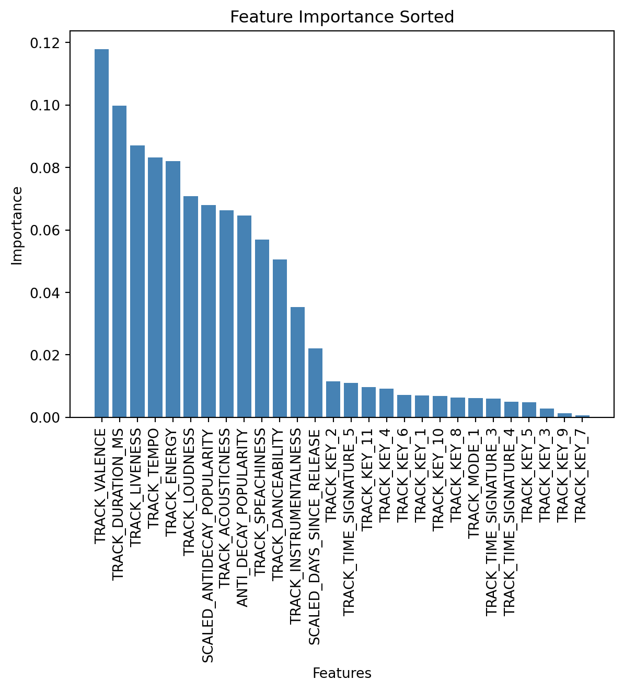
Logistic Regression
logit = LogisticRegression(class_weight='balanced', random_state=5, max_iter=1_000)
logit.fit(X_train_final, y_train_final.to_numpy().ravel())
logit_predict = logit.predict(X_test_final)
conf_matrix = confusion_matrix(y_test_final, logit_predict)
print(classification_report(y_test, logit_predict))
# Plot confusion matrix
plt.figure(figsize=(8, 6))
sns.heatmap(conf_matrix, annot=True, fmt='d', cmap='Blues')
plt.xlabel('Predicted Labels')
plt.ylabel('Actual Labels')
plt.title('Confusion Matrix')
plt.show() precision recall f1-score support
0 0.30 0.25 0.27 12
1 0.55 0.61 0.58 18
accuracy 0.47 30
macro avg 0.43 0.43 0.43 30
weighted avg 0.45 0.47 0.46 30
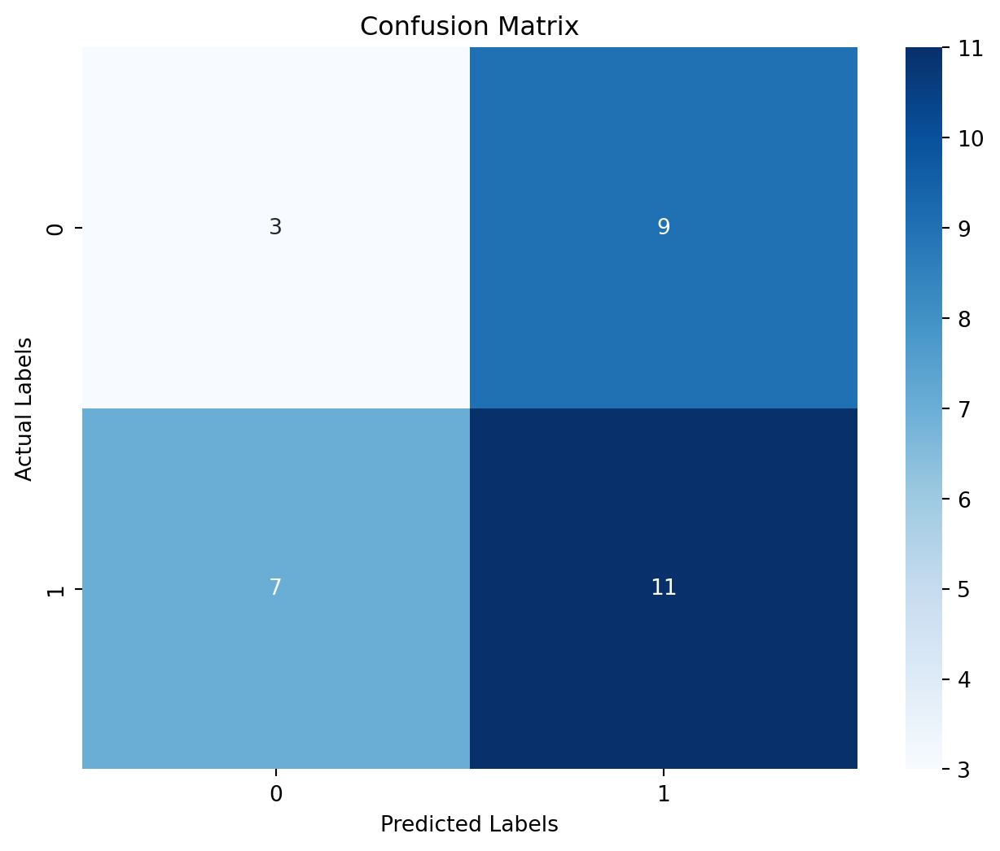
Multi-Layer Perceptron
mlp = MLPClassifier(hidden_layer_sizes= (3, 20), activation='relu', random_state=5)
mlp.fit(X_train_final, y_train_final.to_numpy().ravel())
mlp_predict = mlp.predict(X_test_final)
conf_matrix = confusion_matrix(y_test_final, mlp_predict)
print(classification_report(y_test_final, mlp_predict))
balanced_accuracy_score(y_test_final, mlp_predict)
# Plot confusion matrix
plt.figure(figsize=(8, 6))
sns.heatmap(conf_matrix, annot=True, fmt='d', cmap='Blues')
plt.xlabel('Predicted Labels')
plt.ylabel('Actual Labels')
plt.title('Confusion Matrix')
plt.show() precision recall f1-score support
0 0.00 0.00 0.00 12
1 0.60 1.00 0.75 18
accuracy 0.60 30
macro avg 0.30 0.50 0.38 30
weighted avg 0.36 0.60 0.45 30
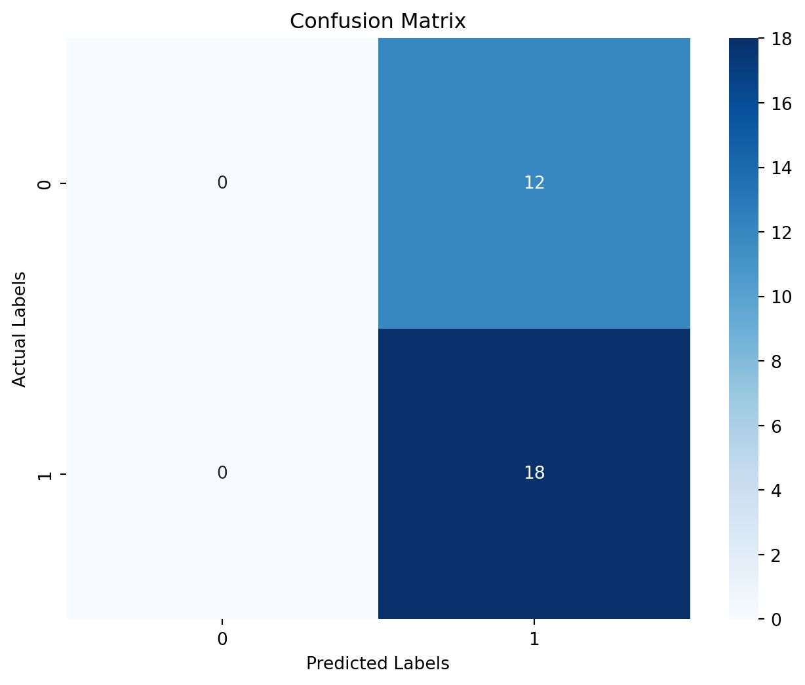
K-Nearest Neighbors
neighbors_and_accuracy = {}
best_knn = None
best_knn_accuracy = 0
best_knn_predict = None
for i in np.arange(1, 20):
knn = KNeighborsClassifier(n_neighbors=i, weights='uniform')
knn.fit(X_train_final, y_train_final.to_numpy().ravel())
knn_predict = knn.predict(X_test_final)
knn_clf_score = balanced_accuracy_score(y_test_final, knn_predict)
neighbors_and_accuracy.setdefault(i, knn_clf_score)
if knn_clf_score > best_knn_accuracy:
best_knn_accuracy = knn_clf_score
best_knn = knn
best_knn_predict = knn_predict
fig = sns.lineplot(x=neighbors_and_accuracy.keys(), y=neighbors_and_accuracy.values())
fig.set_xlabel('K Neighbors')
fig.set_ylabel('Balanced Accuracy Score')
plt.show()
print(f"Max Balanced Accuracy : \n"
f"Neighbors: {best_knn.n_neighbors},\n"
f"Accuracy {best_knn_accuracy:.2f}")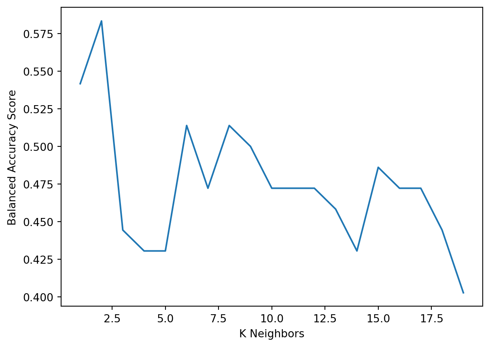
Max Balanced Accuracy :
Neighbors: 2,
Accuracy 0.58# KNN Confusion Matrix
conf_matrix = confusion_matrix(y_test_final, best_knn_predict)
print(classification_report(y_test_final, best_knn_predict))
# Plot confusion matrix
plt.figure(figsize=(8, 6))
sns.heatmap(conf_matrix, annot=True, fmt='d', cmap='Blues')
plt.xlabel('Predicted Labels')
plt.ylabel('Actual Labels')
plt.title('Confusion Matrix')
plt.show() precision recall f1-score support
0 0.47 0.67 0.55 12
1 0.69 0.50 0.58 18
accuracy 0.57 30
macro avg 0.58 0.58 0.57 30
weighted avg 0.60 0.57 0.57 30
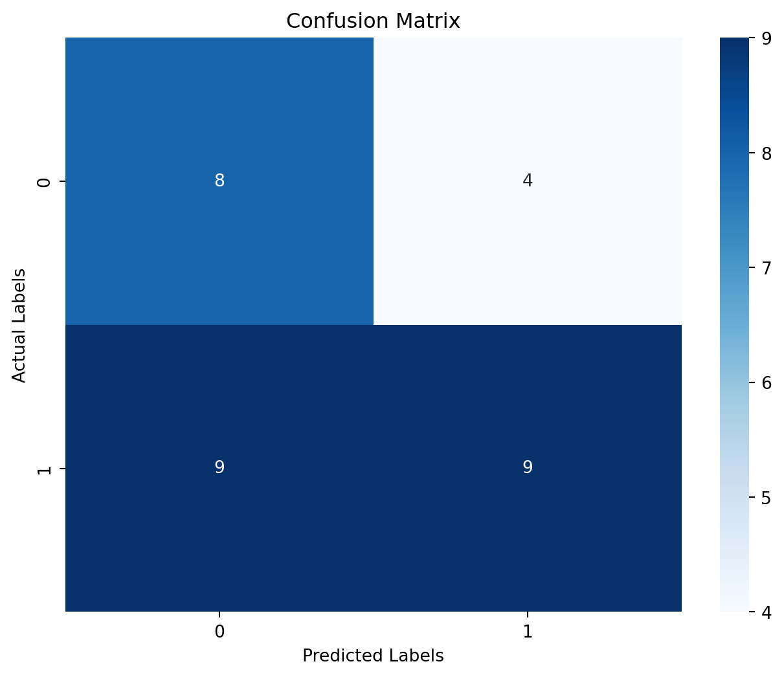
Closing Thoughts
Which songs did our best model get correct?
Since KNN was our best model as far as balanced accuracy score, let’s see exactly which songs it guess correctled/incorrectly, instead of just random indices and values.
song_analysis = df_og[['TRACK_NAME', 'IS_FAVORITE']].iloc[X_test_final.index,]\
.assign(CLF_IS_FAVORITE = best_knn_predict,
IS_MATCH = lambda df: df['CLF_IS_FAVORITE'] == df['IS_FAVORITE'])\
.sort_values('IS_MATCH', ascending=False)
song_analysis| TRACK_NAME | IS_FAVORITE | CLF_IS_FAVORITE | IS_MATCH | |
|---|---|---|---|---|
| 66 | Institutionalized | 0 | 0 | True |
| 97 | Barbed Wire | 1 | 1 | True |
| 55 | Hood Politics | 0 | 0 | True |
| 71 | Poetic Justice | 0 | 0 | True |
| 63 | Rich - Interlude | 0 | 0 | True |
| 22 | These Walls | 1 | 1 | True |
| 56 | untitled 05 | 09.21.2014. | 1 | 1 | True |
| 60 | i | 1 | 1 | True |
| 40 | Rigamortus | 0 | 0 | True |
| 37 | Bitch, Don’t Kill My Vibe | 1 | 1 | True |
| 34 | Hol' Up | 1 | 1 | True |
| 35 | Mr. Morale | 0 | 0 | True |
| 10 | LOYALTY. FEAT. RIHANNA. | 1 | 1 | True |
| 28 | Wesley's Theory | 1 | 1 | True |
| 87 | untitled 04 | 08.14.2014. | 0 | 0 | True |
| 20 | XXX. FEAT. U2. | 0 | 0 | True |
| 17 | LOVE. FEAT. ZACARI. | 1 | 1 | True |
| 32 | YAH. | 1 | 0 | False |
| 42 | untitled 07 | 2014 - 2016 | 0 | 1 | False |
| 57 | Auntie Diaries | 1 | 0 | False |
| 12 | Rich Spirit | 0 | 1 | False |
| 69 | Crown | 1 | 0 | False |
| 70 | Tammy's Song (Her Evils) | 1 | 0 | False |
| 23 | Purple Hearts | 1 | 0 | False |
| 39 | Mortal Man | 1 | 0 | False |
| 24 | HUMBLE. | 0 | 1 | False |
| 13 | FEEL. | 1 | 0 | False |
| 74 | For Sale? - Interlude | 1 | 0 | False |
| 46 | How Much A Dollar Cost | 1 | 0 | False |
| 94 | good kid | 0 | 1 | False |
What are my final thoughts? Basically a coin flip (though maybe a little better). Though, credit where credit is due, I am honestly impressed at the accuracy given the incredible risk/error my personal opinion of whether a song was a favorite of mine or not. Something as simple as taking my own quiz at a later time would surely end in different results. So, my own predict variable would be hard to re-create, thus, a machine learning model would struggle because it is not privy to my own internal thought process in whether a song is truly a favorite or not. However, as mentioned, given that and the features, it is still able to calculate a remarkable accuracy despite this enourmous hurlde.
What I am dissappointed in, is some of the songs it guessed as favorites when it wasn’t a true favorite. However, those songs have A LOT of similarities with songs I do love when I think back to the songs.
Additionally, this goes to show that it’s not just the quantifiable features, but it may also do with the words in the specific words. This would require a NLP lyrical-analysis though, which is beyond the scope of this specific project. But perhaps something for a future one.
Lastly, some songs I did like, but aren’t a huge favorite. So, just as much as the model “is the problem” I was also problem that was introduced into the equation with perhaps a hard-to-reproduce scaling system.